Spitalul în care învățați are un plan strategic
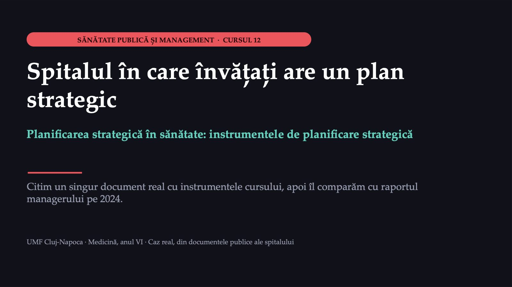
1 / 52SCJU Cluj-Napoca și planul lui
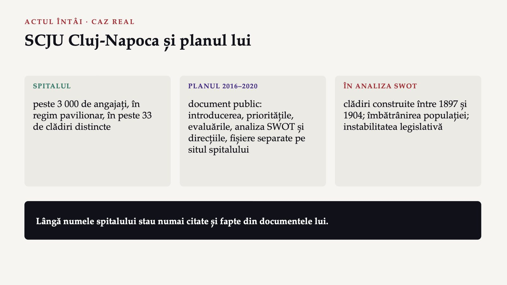
2 / 52Două planuri și un raport
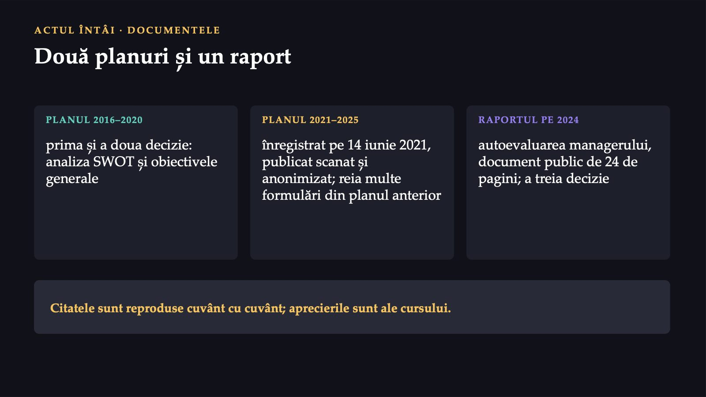
3 / 52La ce veți răspunde azi, pe telefon
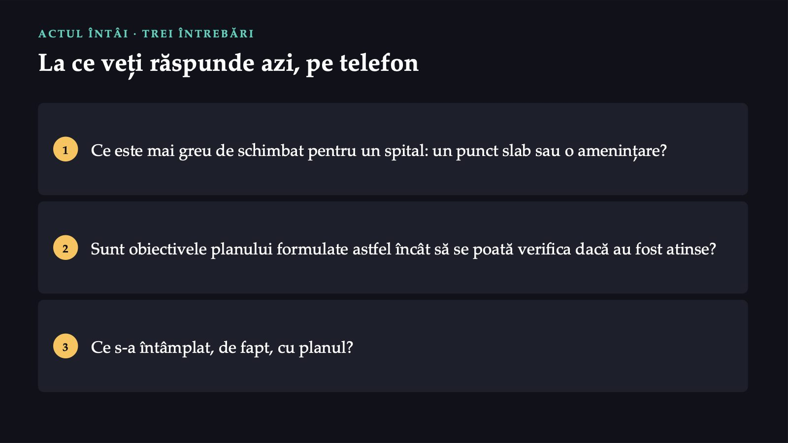
4 / 52Tema 12: instrumentele de planificare strategică
![FIȘA DISCIPLINEI Tema 12: instrumentele de planificare strategică „Planifica, implementa și evalua o intervenție de sănătate publică folosind un model logic, un calendar al activităților, o analiză SWOT și un plan de evaluare.” Fișa disciplinei, aptitudinea A3 TEMA 12 economia sănătății și planificarea strategică, comună cu cursul despre economia sănătății COMPETENȚA C6 explicarea instrumentelor de planificare strategică LUCRAREA PRACTICĂ 3 exercițiul în echipă: modelul logic, calendarul, analiza SWOT, planul de evaluare Matricea TOWS și analiza PESTLE nu sunt numite în fișă; le folosim pentru că ajută la citirea planului.](diapozitive/C12/005.jpg) 5 / 52
5 / 52Documente pe care le veți întâlni ca medici
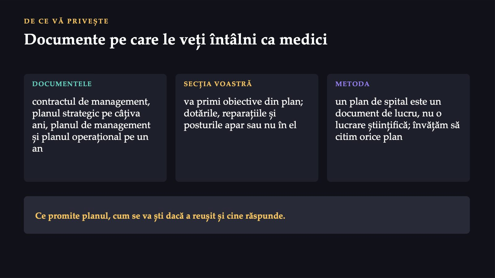
6 / 52Trei întrebări, în această ordine
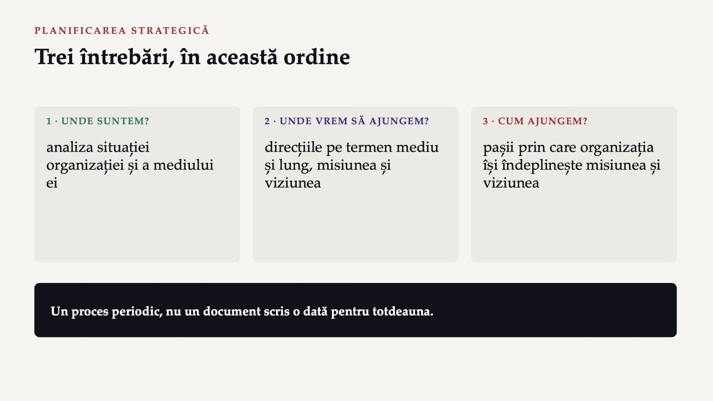
7 / 52Un ciclu, nu o linie dreaptă
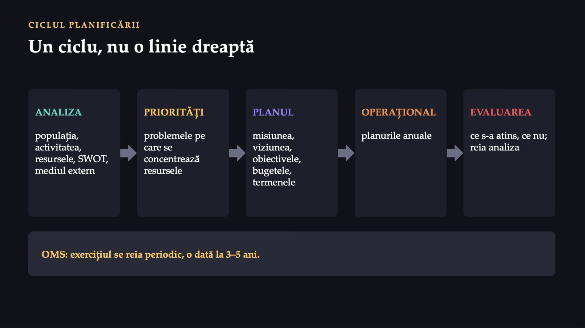
8 / 52Diferența ține de orizont și de detaliu
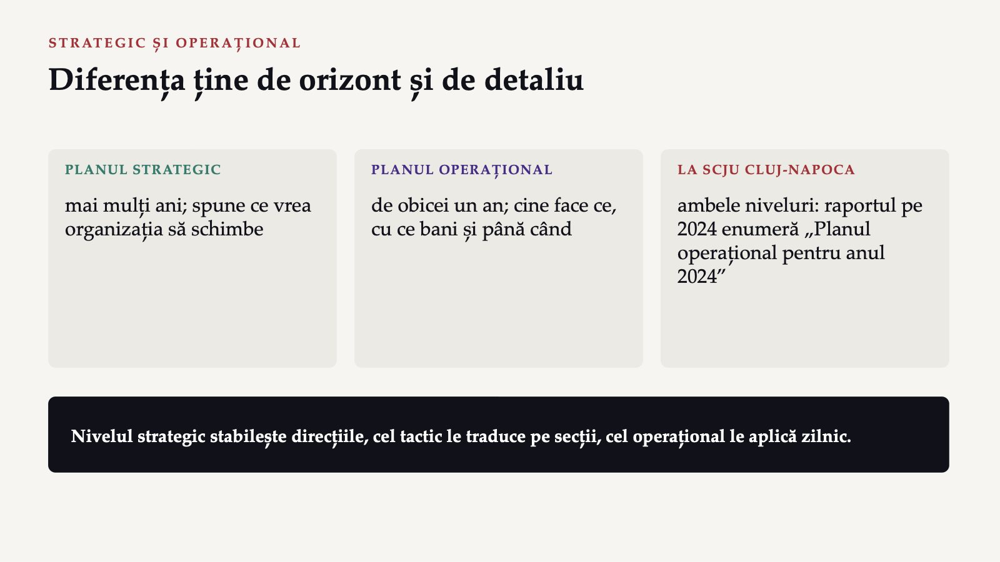
9 / 52Nu se măsoară, dar dau criteriul obiectivelor
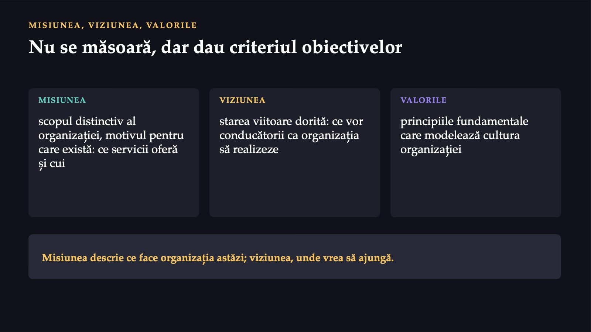
10 / 52Misiunea și viziunea SCJU Cluj-Napoca
![PLANUL 2016–2020 · CITATE Misiunea și viziunea SCJU Cluj-Napoca MISIUNEA, PRIMUL PUNCT „Satisfacerea nevoilor pacienților, prin furnizarea de servicii medicale performante cu respectarea principiilor de bază: calitate, controlul costurilor, satisfacția pacientului și a personalului, acces la servicii.” VIZIUNEA, O DEVIZĂ „Spre excelență, prin competență, profesionalism și dedicație, în interesul omului” Viziunea nu se judecă după criteriile SMART; obiectivele, da. Sursa: planul strategic 2016–2020 al SCJU Cluj-Napoca, capitolul introductiv. Planul 2021–2025 păstrează aceeași viziune.](diapozitive/C12/011.jpg) 11 / 52
11 / 52Obiective generale și obiective pe termen mediu
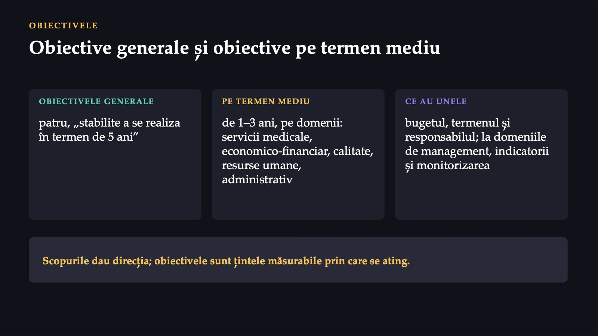
12 / 52Patru cadrane, două jumătăți
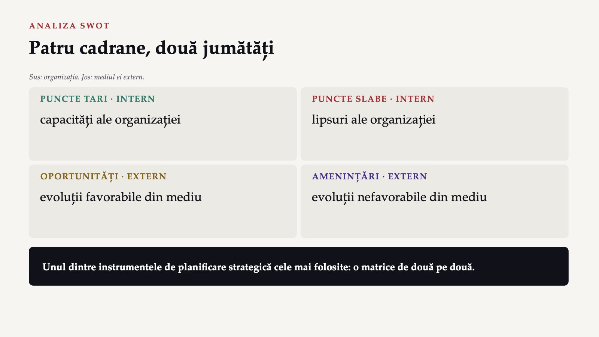
13 / 52Cei patru pași
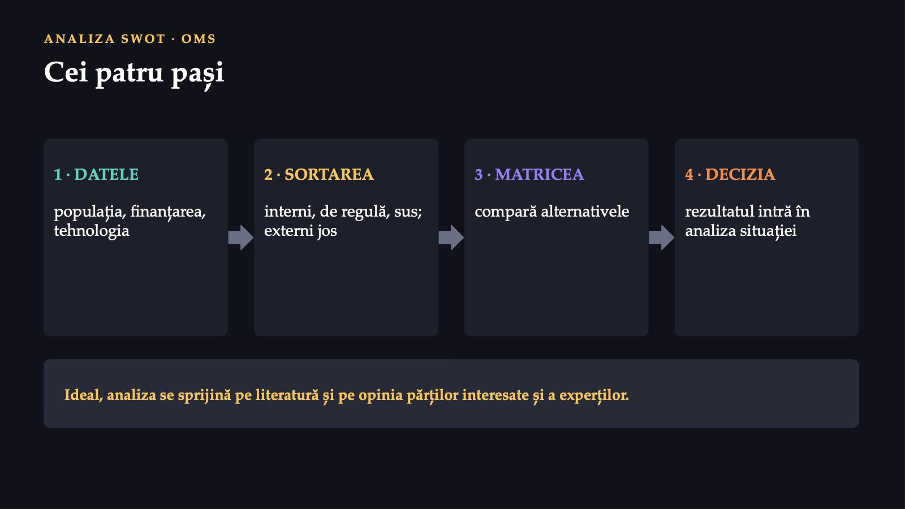
14 / 52Controlul, nu „bine” și „rău”
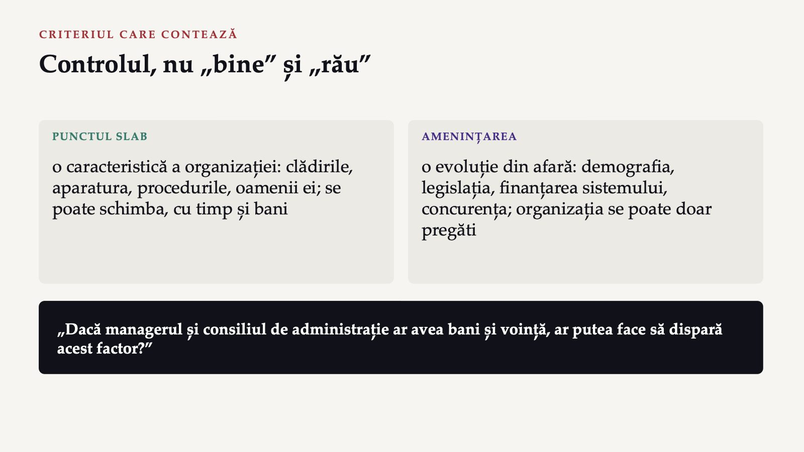
15 / 52Ce scrie spitalul despre sine
![PLANUL 2016–2020 · ANALIZA SWOT Ce scrie spitalul despre sine Pe ecran, alături: cele trei pagini ale capitolului. PUNCTE TARI categoria I; calitatea certificată; UPU - SMURD; tomograf, rezonanță magnetică, angiograf; peste 2500 de intervenții neurochirurgicale pe an PUNCTE SLABE clădiri vechi, în mai multe pavilioane; aparatură depășită; salarizare scăzută; „Spațiu insuficient pentru clinica de Neurochirurgie” OPORTUNITĂȚI granturile europene; programele de sănătate; parteneriatele cu Consiliul Județean, universitatea, alte spitale AMENINȚĂRI subfinanțarea; migrația populației active; instabilitatea legislativă; concurența spitalelor din regiune; „Îmbătrânirea populației” Citiți capitolul și alegeți un rând din fiecare cadran.](diapozitive/C12/016.jpg) 16 / 52
16 / 52Ce e mai greu de schimbat pentru spital: un punct slab sau o amenințare?
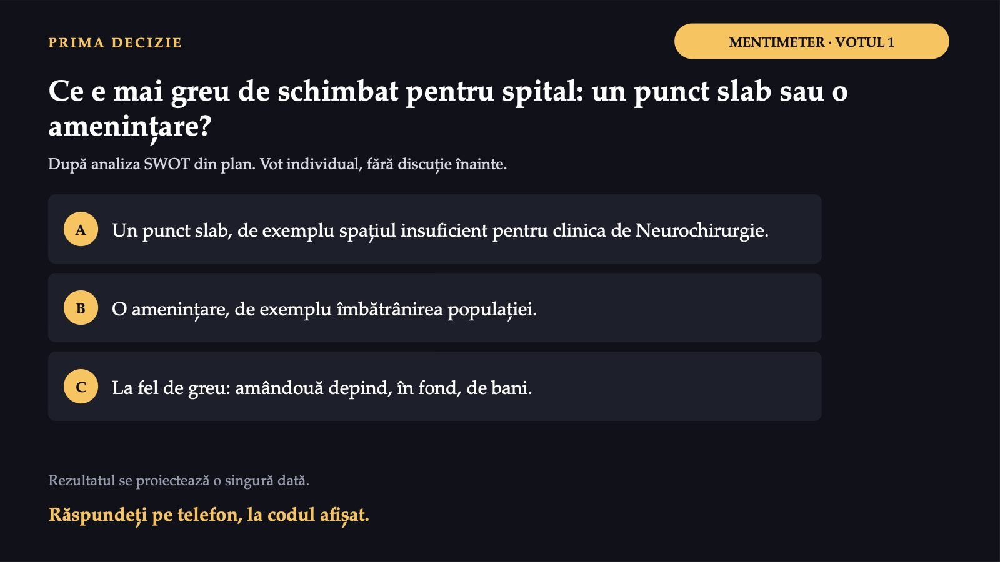
17 / 52Răspunsul apare după ședință
Răspunsul apare după ședință
Răspunsul apare după ședință
Răspunsul apare după ședință
Două observații pentru orice analiză SWOT
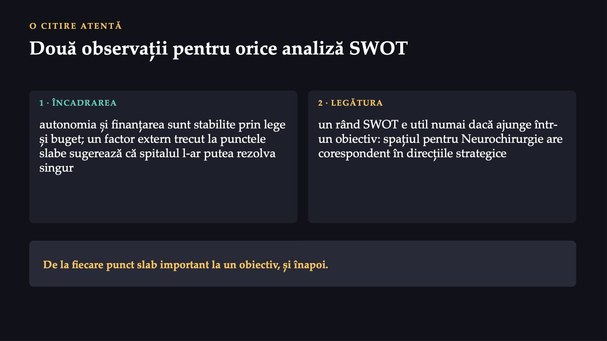
20 / 52De la analiză la opțiuni strategice
 21 / 52
21 / 52Un exemplu construit pentru curs
![MATRICEA TOWS · SCJU CLUJ-NAPOCA Un exemplu construit pentru curs FACTORUL INTERN (PLAN) · FACTORUL EXTERN (PLAN) · OPȚIUNEA (A CURSULUI) SO · Secțiile clinice universitare · Parteneriatele cu universitatea · Programe comune de formare și cercetare WO · Spațiul insuficient pentru Neurochirurgie · Granturile europene · Proiect de extindere depus pentru finanțare europeană ST · UPU - SMURD cu dotare performantă · Concurența spitalelor județene · Centru regional pentru urgențele complexe WT · Aparatura depășită · Subfinanțarea sistemului · Înlocuirea aparaturii critice, cu contracte de service Rândul WO îl regăsiți în actul al treilea.](diapozitive/C12/022.jpg) 22 / 52
22 / 52Șase categorii pentru mediul extern
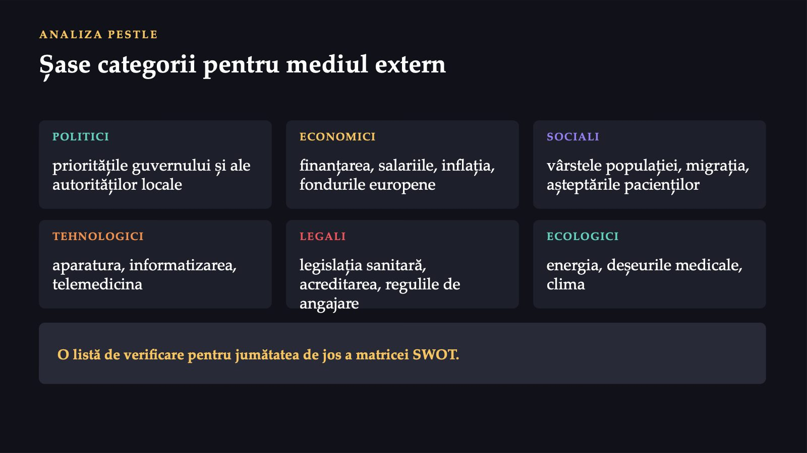
23 / 52Mediul SCJU Cluj-Napoca, reorganizat de curs
![PESTLE · 2016 FAȚĂ DE AZI Mediul SCJU Cluj-Napoca, reorganizat de curs PLANUL 2016–2020 · DOCUMENTELE ULTERIOARE Politic · Strategii sanitare incoerente; administrațiile locale · Aceleași în 2021–2025; sprijinul Consiliului Județean și Local, în raportul pe 2024 Economic · Subfinanțarea; granturile europene; cazul ponderat · Proiecte finanțate prin PNRR, în raportul pe 2024 Social · Îmbătrânirea; migrația populației active · Plus pandemia de SARS-CoV-2; epuizarea medicilor ATI: punct slab, factor intern Tehnologic · Aparatura depășită (punct slab intern) · Proiect PNRR pentru infrastructura digitală Legal · Instabilitatea legislativă; ocuparea greoaie a posturilor · Aceleași amenințări în 2021–2025 Ecologic · Niciun factor menționat · Niciun factor menționat Încadrarea pe categorii aparține cursului; factorii sunt din analizele SWOT ale spitalului și din raportul pe 2024.](diapozitive/C12/024.jpg) 24 / 52
24 / 52Trei lucruri reies din tabel
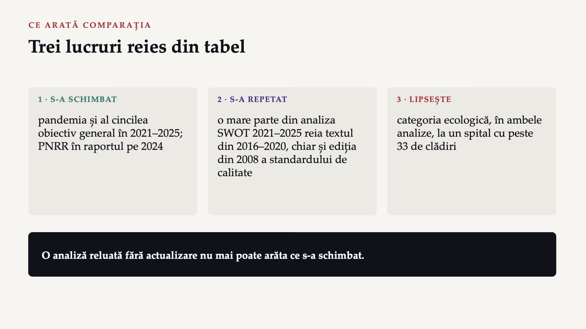
25 / 52Oricine să poată spune dacă a fost atins
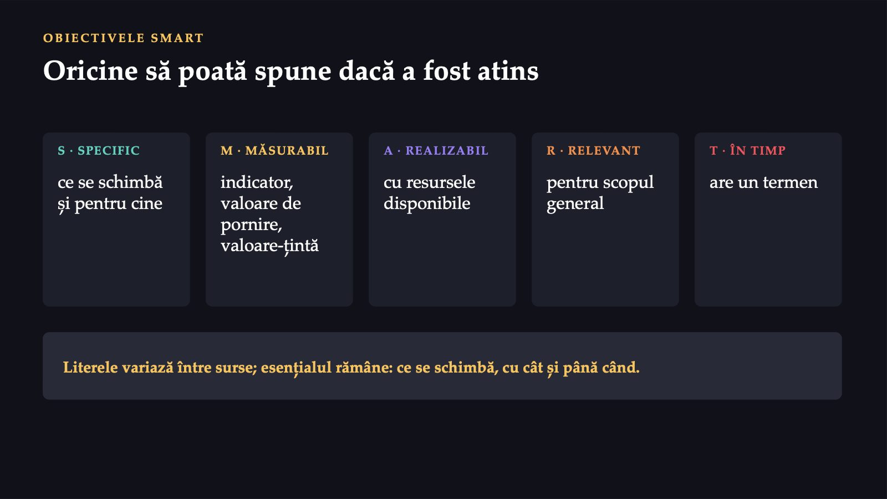
26 / 52Șase întrebări pentru fiecare obiectiv
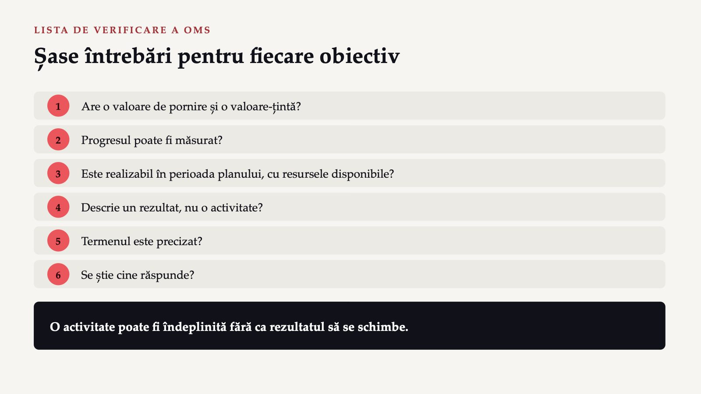
27 / 5214 553 000 lei
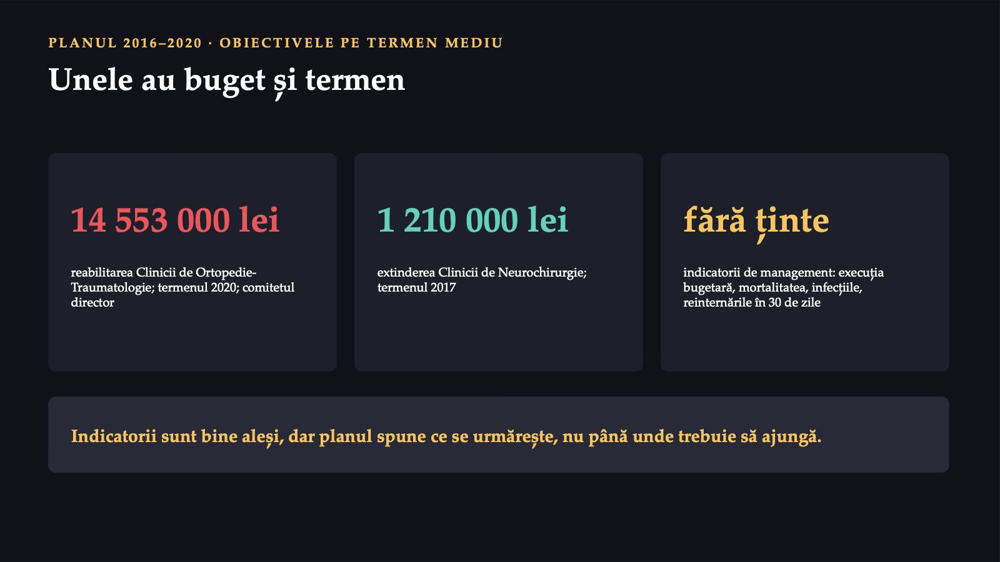
28 / 52Buget, termen și responsabil: atunci e SMART?
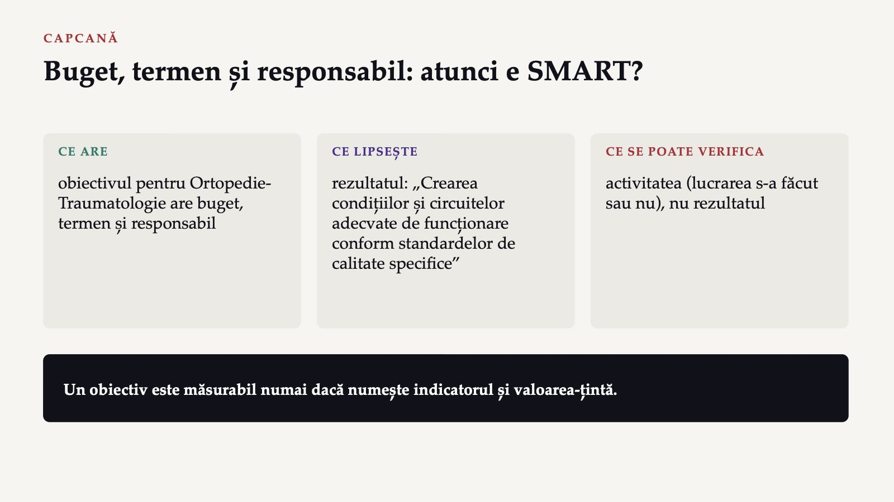
29 / 52Un obiectiv general, reformulat SMART
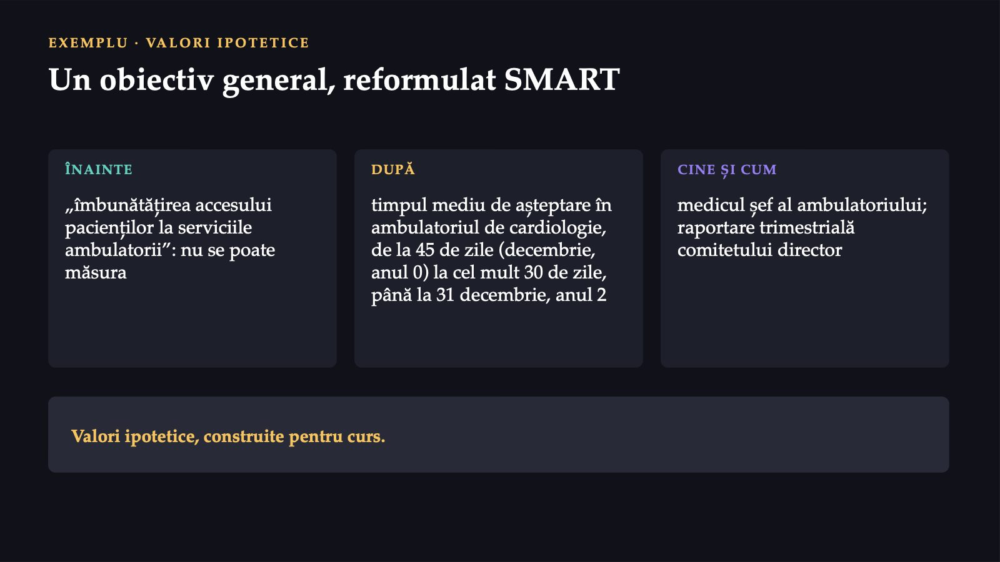
30 / 52„Obiective generale stabilite a se realiza în termen de 5 ani”
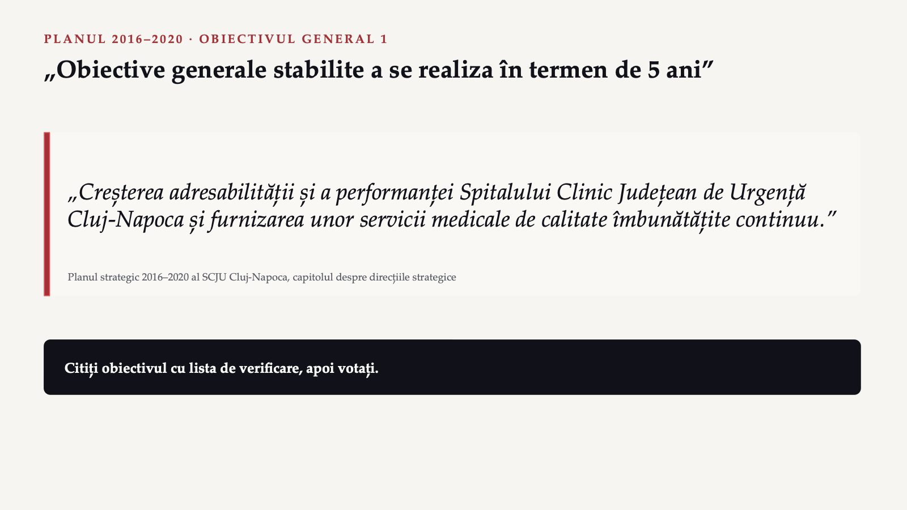
31 / 52Obiectivul acesta e SMART?
 32 / 52
32 / 52Răspunsul apare după ședință
Răspunsul apare după ședință
Răspunsul apare după ședință
Răspunsul apare după ședință
Mai multe probleme decât resurse
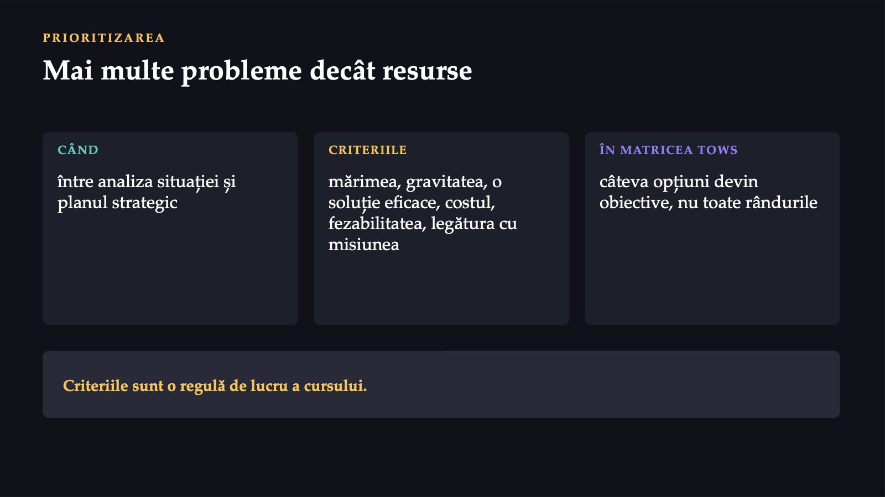
35 / 52De la obiective la activități
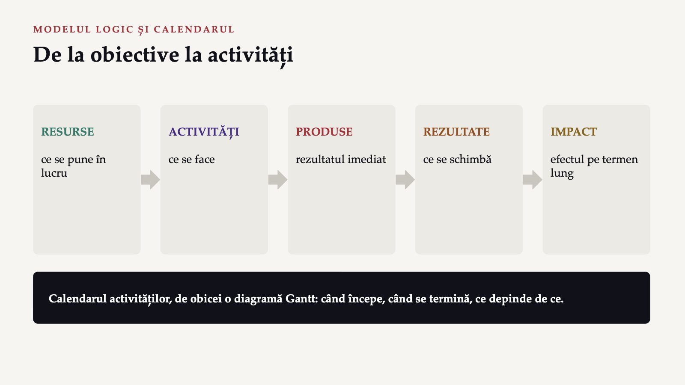
36 / 52Cum se urmărește un plan
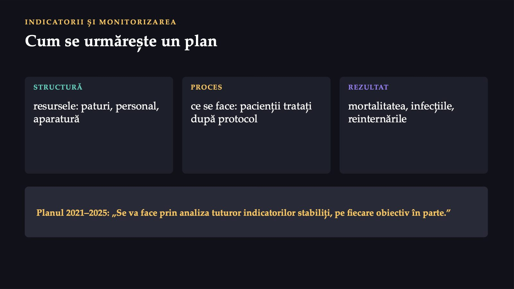
37 / 52Șapte componente
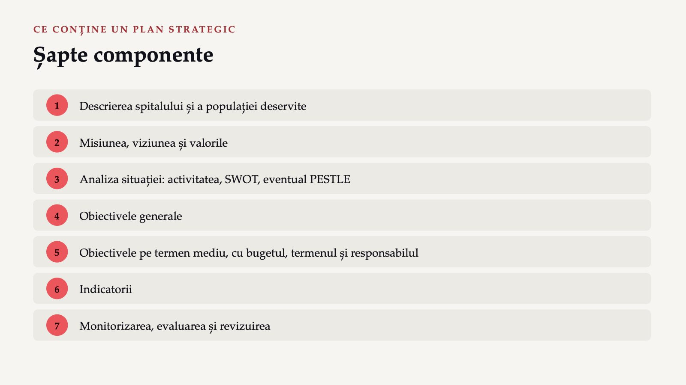
38 / 52O promisiune cu buget și termen
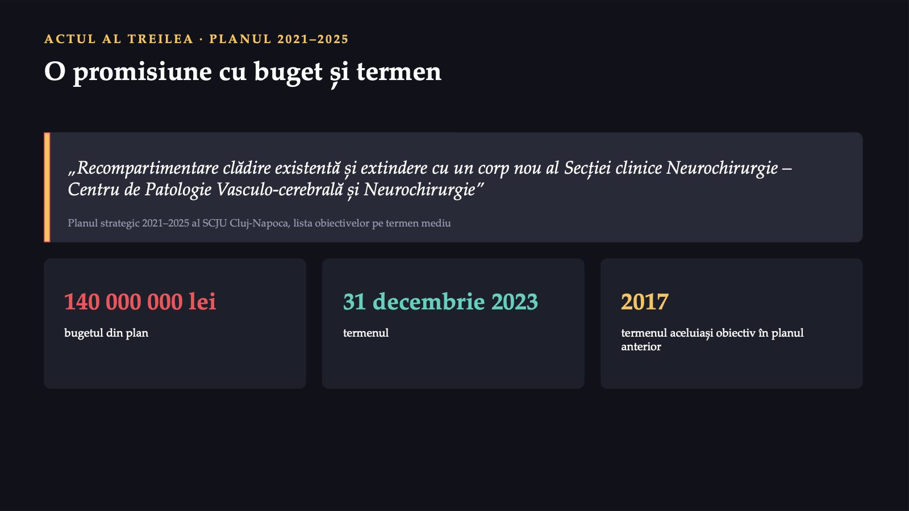
39 / 5253 650
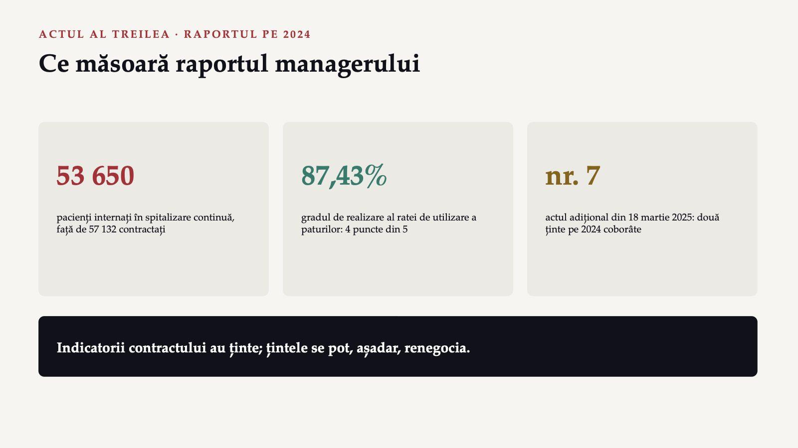
40 / 52Același proiect, în raportul pe 2024
![ACTUL AL TREILEA · INVESTIȚIILE Același proiect, în raportul pe 2024 FRAZA CARE INTRODUCE LISTA „au fost derulate proiecte de îmbunătățire a infrastructurii, cu finanțare de la Consiliul Local, Consiliul Județean, veniturile proprii ale spitalului, precum și din PNRR” NEUROCHIRURGIA, PRIN PNRR 230 734 270,54 lei, cu TVA; contribuția proprie 11 536 713,53 lei; stadiul nu este precizat GAZELE MEDICALE marcat „proiect finalizat la date de 31 decembrie 2024” Pe ecran: pagina raportului cu lista proiectelor.](diapozitive/C12/041.jpg) 41 / 52
41 / 52Ce s-a întâmplat cu planul?
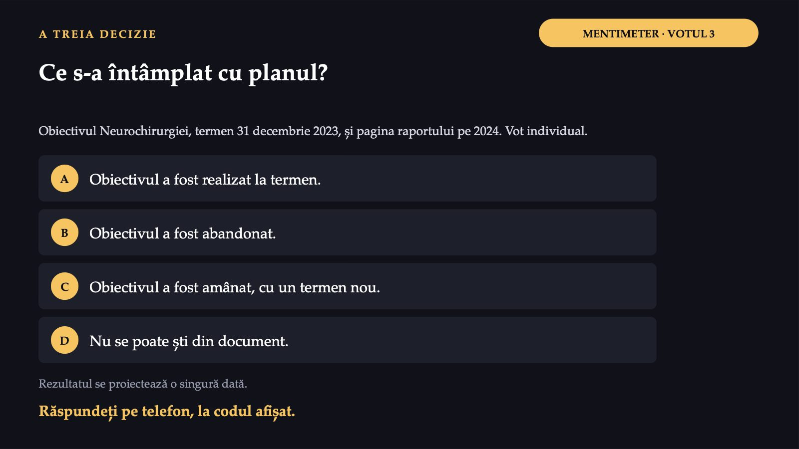
42 / 52Răspunsul apare după ședință
Răspunsul apare după ședință
Răspunsul apare după ședință
Răspunsul apare după ședință
Răspunsul apare după ședință
Răspunsul apare după ședință
Răspunsul apare după ședință
Răspunsul apare după ședință
Limitele a ceea ce arată documentele
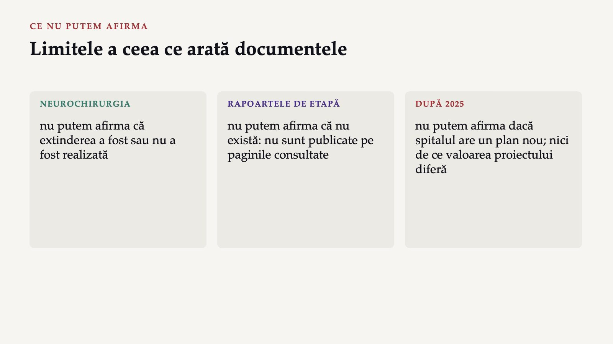
47 / 52Ce rămâne din oră
![RECAPITULARE Ce rămâne din oră 1 Planificarea strategică: unde este organizația, unde vrea să ajungă, cum ajunge; planul se aplică prin planuri operaționale anuale. 2 Misiunea, viziunea și valorile nu se măsoară, dar dau criteriul pentru obiective. 3 În analiza SWOT, factorii interni pot fi schimbați de organizație; cei externi se pot doar anticipa. 4 Matricea TOWS dă opțiuni strategice; analiza PESTLE verifică, pe șase categorii, mediul extern. 5 Un obiectiv e SMART numai cu indicator, valoare de pornire, valoare-țintă și termen.](diapozitive/C12/048.jpg) 48 / 52
48 / 52Zece afirmații, adevărat sau fals
 49 / 52
49 / 52Răspunsul apare după ședință
Răspunsul apare după ședință
Ce faceți diferit luni dimineață
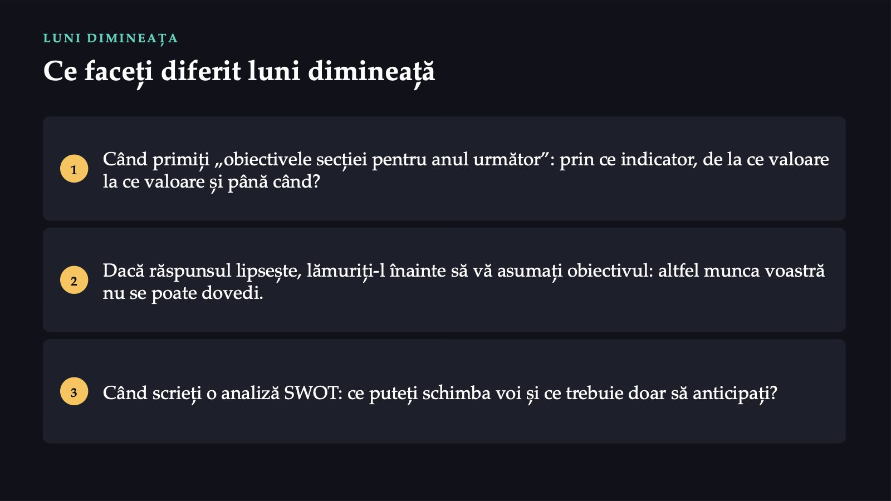
51 / 52Înainte să plecați
 52 / 52
52 / 52Săgeți sau spațiu: navigare · O: vedere de ansamblu · N: notele prezentatorului · F: ecran complet · Esc: închidere